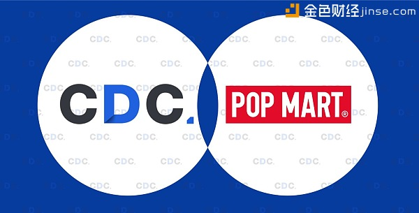

開發快訊
新零售王者王宁加入消费链CDC团队 助力区块链消费数据营销生态建设
2018/1/25 17:56
消费链CDC基金会今天宣布POP MART的创始人兼董事长王宁先生以个人身份加入全球顾问团队。双方将在新零售及IP运营领域进行区块链技术生态的底层和个人消费资产应用层服务上展开研究。
消费链CDC是全球首个去中心化的智能区块链消费数据资产营销生态平台。宗旨是通过全球消费者自主采集的消费数据资产，形成去中心化的区块链广告网络，让提供数据源的用户本身享受到数据利益分成。这将革命性的挑战Google等传统互联网巨头所垄断的中心化竞价广告模式。
（POP MART创始人兼董事长王宁）
王宁先生创办的POPMART是集潮流商品零售、艺术家经纪、新媒体娱乐化平台和大型展会举办于一体的IP综合运营服务集团，售卖包含自主开发商品与国内外知名潮流品牌的商品，包括潮流玩具、二次元周边、BJD娃娃、IP衍生品等多个品类。作为国内乃至全球最大的潮流玩具运营商之一，泡泡玛特签约了多个国内外一线潮流玩具品牌，并每年在国内举办大型潮流玩具展。同时，泡泡玛特自主开发的专业潮流玩具社交电商平台app“葩趣”也成为了国内最活跃的潮流玩具社区。
消费链CDC的应用场景从全球每天都会产生的巨大的海量账单数量入手，尤其在西方发达国家，个人消费实体账单更是必须保存的要件，虽然中国等亚太国家在线支付已经高度普及，但是用户对作为自己消费记录的账单百分百所有权是毋庸置疑的，消费链CDC也支持用户上传截图化的，SDK化的主动上链行为。全球范围内，由于各大中心化流量广告平台对个人消费数据收集的垄断，个人消费数据资产的孤岛化，隔绝化日益严重。海量的消费者虽然贡献了巨大数据源，但却没有享受到个人消费资产被用于广告营销所带来的巨大红利。

这些巨大的实体账单，消费数据资产还在沉睡当中。每个用户结账完毕后，账单的价值也就就马上大幅贬值，接近废纸，但是消费链CDC让全球的账单变废为宝，成为新的数据黄金，同时区块链技术正是可以让消费者作为数据贡献者而享受不可逆不可篡改的数据资产获利的最好的基础，让消费者享受自己创造数据，自己获利的数据资产红利。
作为全球最适合应用去中心化的区块链技术的两个领域—金融行业和广告行业，相对于区块链技术在金融行业的模式发展层出不穷，日新月异，今天在广告领域，我们终于看到了第一个革命性模式的出现。
消费链CDC能否发展成为区块链界的Google，让我们拭目以待。